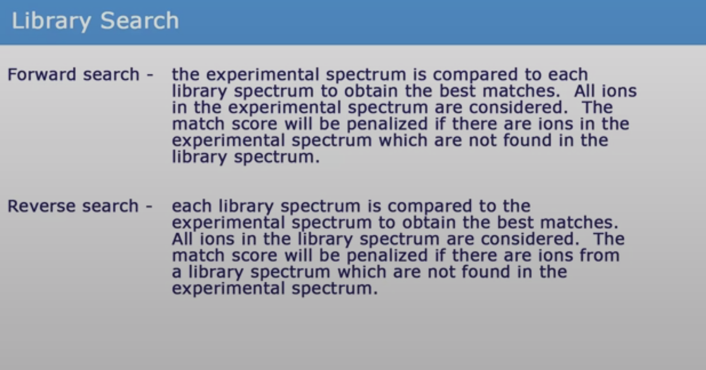

9 Library search
In environmental analysis, NIST MS library is widely used to match a spectrum to a list of standard spectra. However, a major drawback of the NIST MS Search is that now all chemicals are included and all spectral ions are at unit mass (for EI spectra library, also called mainlib)
Below figure shows a relatively good spectral match for a standard if only nominal or even at 0.1 decimal m/z:
Figure 9.1: Spectral matching (using MS-DIAL)

9.1 IN SILICO FRAGMENTATION
There are several openly available models that have recently been published to predict the fragmentation patterns of GC-EI MS.
9.1.1 Metfrag
9.1.2 Sirius CSI FingerID
9.1.3 CFM-ID
In silico fragmentation:
Help file: https://sourceforge.net/p/cfm-id/wiki/Home/
Use instructions:
- If you are using EI-MS (GC-MS) data, please use the ei_ms_model provided.
- Note that lpsolve55.dll must also be included in the same directory as the executables. This file can be found in the development version of LPSolve (e.g. lp_solve_5.5.2.0_dev_win32.zip), which can be downloaded from https://sourceforge.net/projects/lpsolve/files/lpsolve/5.5.2.5/lp_solve_5.5.2.5_dev_win32.zip/download.
Cfm-predict
COMMAND:
cfm-predict.exe <smiles_or_inchi_or_file> <prob_thresh> <param_file> <config_file> <annotate_fragments> <output_file_or_dir> <apply_postproc> <suppress_exceptions>
EXAMPLE (naphthalene):
cfm-predict.exe InChI=1S/C10H8/c1-2-6-10-8-4-3-7-9(10)5-1/h1-8H 0.001 D:/Program/cfm-id-2.4_win32/ei_nn_iso_new/param_output.log D:/Program/cfm-id-2.4_win32/ei_nn_iso_new/param_config.txt 0 D:/Program/cfm-id-2.4_win32/test/output.msp
EXAMPLE (.txt file as input):
cfm-predict.exe D:/Program/cfm-id-2.4_win32/test/input.txt 0.001 D:/Program/cfm-id-2.4_win32/ei_nn_iso_new/param_output.log D:/Program/cfm-id-2.4_win32/ei_nn_iso_new/param_config.txt 0 D:/Program/cfm-id-2.4_win32/test/output.msp
9.3 DeepEI
Help files: https://github.com/hcji/DeepEI
https://github.com/hcji/DeepEI/blob/master/Usage.ipynb
9.4 QCEIMS
RUN ON LINUX SERVER
Check online manual for details
PREPARATION
Copy the “.XTBPARAM” folder and the “.mass_raw.agr” file to /home/ORUNET.ORU.SE/twg/
- Prepare a file with the equilibrium structure of your desired molecule M. Important: This file has to be named coord and should have the TURBOMOLE coord format (tmol). In most cases you will have an .xyz file. This file can be easily converted by typing:
x2t
> coord
if you have installed TURBOMOLE. If you do not have TURBOMOLE, you may have to write a
script converting .xyz files to TUROBOMOLE coord files. Be advised that the coord file has
to be in atomic units.
NOTE: this can be converted using openbabel -> tmol
- Prepare an input file called qceims.in. For the input options, see section 4 or the qceims.in file in the examples folder. If no such file is prepared, default options are: run GFN1-xTB with 25 times the number of atoms in the molecule trajectories (ntraj).
TO RUN QCEIMS
Open bash
- Enable overwriting files:
set +o noclobber- Enable the QCEIMS executables in the path:
export PATH=/home/ORUNET.ORU.SE/twg/QCEIMS/:/home/ORUNET.ORU.SE/twg/bin:/home/ORUNET.ORU.SE/twg/.local/bin:/bin:/usr/bin:/opt/thinlinc/bin:/usr/local/bin:/usr/bin/X11:/sbin:/usr/sbin:/usr/local/sbin:/snap/bin:/opt/thinlinc/bin:/opt/SPAdes/SPAdes-3.13.0-Linux/bin:/opt/mauve/mauve_snapshot_2015-02-13:/opt/parsnp/Parsnp-Linux64-v1.2:/opt/prokka/prokka-master/bin:/opt/artemis/artemis- go to your folder, e.g:
cd QCEIMS/example/ethanolRun:
qceimsRun qceims again and check the ouput if all is ok.
- Executing production runs. Running qceims locally, use: pqceims <#cores>, where <#cores> is the number of cores requested. e.g for 10 cores:
pqceims 10You might want to leave your work station and even log out in the meantime. In this case, type (for 10 cores):
pqceims 10 &Optionally, check the status of your QCEIMS run by changing to your working directory and typing
getres, which will provide an output of the form: XXX runs done and written to tmpqceims.res/out which gathers the runs already finished (creates tmpqceims.res and tmpqceims.out). The final results are on qceims.out and qceims.res
download an exp. EI-MS from the NIST if available and copy it to the working dir as exp.dat (take the JCAMP-DX format from their web page). - Useful for testing but not necessary. -
get spectrum by
plotmsand plot it with
xmgrace mass.agrthe file “.mass.agr” should be in your home dir. plotms reads by default <qceims.res> or by
plotms -f <name_of_res_file>any other res file. Check the consistency of the total charge.
7.2. if high resolution spectrum is needed then copy the plotms executable from the QCEIMS-HRMSplotMS folder and replace. Rename the qceims.res file to qcxms.res and run plotms.
- if the ratio of fragment to M+ signals is too large decrease the IEE by increasing the parameter ieeatm (default is 0.6 eV/atom) by inserting
ieeatm <value>in qceims.in and do the parallel run again (requires an additional qceims pre-run).
- if the IEE is ok, increase ntraj to get better statistics and re-run (note: qceims.res is appended so delete it at this point).
VERY IMPORTANT: EVERY CHANGE IN THE INPUT REQUIRES A RUN OF QCEIMS IN THE WORKING DIR BEFORE THE PARALLEL SCRIPT IS STARTED IN ORDER TO BE IN EFFECT!
trajectories are in TMPQCEIMS/TMP.
they are numbered by the run and the ion tracking number. (something like gmolden TMPQCEIMS/TMP.$1/trj.$1.$2 gives trajectory $1, track $2) for more QCEIMS code options (model parameters) see manual
useful options for qceims:
-c : check IEE but do nothing (requires M trajectory)
-p : normal production (fragmentation) mode. Possible in any
existing TMPQCEIMS/TMP.$1 directory.
-eonly : use the requested QC (as specified in qceims.in)
and do a single-point energy
-e0 : same as above, charge = 0
-e1 : same as above, charge = 1
-qcp
other important options in <qceims.in>:
ip-
9.5 LIBRARY SEARCH
xx
9.6 Reading mgf files in R
9.7 LIB2NIST
Convert your library list into NIST library format using LIB2NIST command line (in order to preserve the accurate mass). See command line help file for arguments.
COMMAND:
lib2nist.exe /log9 Mylib.log /OutLib /StdRounding:N /MsmsOnly:Y /AccuratePeakMZ /PrecurMzDecPlaces=keep /PeakMzDecPlaces=keep /UseSubset:N <path to msp file> <output path> =<new name of library>
EXAMPLES:
lib2nist64.exe /log9 Mylib.log /OutLib /StdRounding:N /MsmsOnly:Y /AccuratePeakMZ /PrecurMzDecPlaces=keep /PeakMzDecPlaces=keep /UseSubset:N D:\Projects\Suspect_lists\Spectral_databases\RECETOX_GC-EI_MS_20201028.msp D:\Program\NIST14\ =RECETOX_GC-EI_MS_20201028
9.8 MSPepSearch
Use MSPepSearch to find similar spectra
EXAMPLES:
MSPepSearch64.exe Gusviqh /ZI 0.1 /ZIPPM 20 /MPPM 30 /MzLimits 50 -1 /MinMF 10 /OnlyFound /HITS 5 /LIB D:\Raw_data\Dust_Florian\GC\test\Mylib /INP D:\Raw_data\Dust_Florian\GC\test\input.msp /OUTMGF D:\Raw_data\Dust_Florian\GC\test\test.mgf /OUTTAB D:\Raw_data\Dust_Florian\GC\test\test.tsv /OutMW
MSPepSearch64.exe Gusviqh /ZI 0.1 /ZIPPM 20 /MPPM 30 /MzLimits 50 -1 /MinMF 100 /OnlyFound /HITS 5 /LIB C:\NIST14\NIST_contaminants_orbitrap /INP D:\Projects\Mexico_Air\NIST_Mexico.msp /OUTMGF D:\Projects\Mexico_Air\test\test.mgf /OUTTAB D:\Projects\Mexico_Air\test\test.tsv
MSPepSearch64.exe Gusviqh /ZI 0.01 /ZIPPM 10 /MPPM 10 /MzLimits 50 -1 /MinMF 500 /OnlyFound /HITS 5 /LIB C:\NIST14\LCMs_GC_Orbitrap /INP D:\Raw_data\Dust_Florian\GC\test\11.msp /OUTMGF D:\Raw_data\Dust_Florian\GC\test\test.mgf /OUTTAB D:\Raw_data\Dust_Florian\GC\test\test.tsv
More info on commands on: https://pubs.acs.org/doi/suppl/10.1021/acs.analchem.9b03415/suppl_file/ac9b03415_si_001.pdf